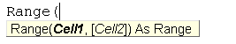
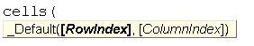

Inconsciamente quando creiamo una macro è come se stessimo programmando in VBA (Visual Basic for Application).
Cos'è VBA?
Visual Basic for Applications (VBA) è un'implementazione di Visual Basic inserita all'interno di applicazioni Microsoft quali la suite Microsoft Office o Visio, altri programmi contengono un'implementazione parziale di VBA (ad esempio AutoCAD e WordPerfect).
Nonostante il suo stretto legame con Visual Basic, VBA non può essere usato per eseguire applicazioni stand-alone, ma è comunque possibile una certa interoperatività fra applicazioni (ad esempio è possibile creare un report in Word a partire da dati di Excel) grazie all'automazione (tecnologia COM, Component Object Model).
[Fonte: wikipedia]
Modificare una macro con VBA
Per introdurre VBA guardiamo la macro fatta nella sezione precedente per togliere i riferimenti da una colonna e cambiargli formato:
- Procediamo aprendo la registrazione di una macro, dantogli un nome e uno shrtcut che reputiamo comodo.
- Ci troviamo già nella cella ad apice, quindi clicchiamo Ctrl + [Maiusc] + [freccia giù] per selezionare l'intera colonna
- La copiamo con Ctrl + c
- Poi clicchiamo su
Home >Incolla >Incolla speciale >Incolla Valoriper togliere i collegamenti - Cambiamo il formato della colonna in base alle esigenze
- Ed infine clicca sul comando "Interrompi registrazione", per terminate la Macro.
Per modificare la macro con VBA andiamo su
Sviluppo > Visualizza macro
Selezioniamo la macro che vogliamo modificare e clicchiamo su modifica

Una volta cliccato su modifica si aprirà visual basic con inserito nel modulo1 la macro da noi creata.

Codice VBA della macro:
Sub Macro1()
'
' Macro1 Macro
' Macro di prova
'
' Scelta rapida da tastiera: CTRL+g
'
Range(Selection, Selection.End(xlDown)).Select
Selection.Copy
Selection.PasteSpecial Paste:=xlPasteValues, Operation:=xlNone, SkipBlanks _
:=False, Transpose:=False
Application.CutCopyMode = False
Selection.NumberFormat = "m/d/yyyy"
End Sub
Come si può notare dal codice sopra, ogni movimento fatto corrisponde a delle procedure specifiche; infatti con Range(Selection, Selection.End(xlDown)).Select selezioniamo tutta la colonna; con Selection.Copy copiamo la selezione; con Selection.PasteSpecial Paste:=xlPasteValues, Operation:=xlNone, SkipBlanks _:=False, Transpose:=False incolliamo per valori; con Application.CutCopyMode = False rimuoviamo l'elemento copiato; ed infine con Selection.NumberFormat = "m/d/yyyy" gli cambiamo il formato in formato data.
Programmare in VBA
Da qui in poi si fa sul serio!!! Premetto che non affronteremo a fondo tutti i comandi presenti in VBA perchè credo che, una volta compresi i meccanismi e la logica che sta alla base del linguaggio, il più fa la pratica e affrontare problemi differenti.
Iniziamo elencando le variabili utilizzabili in questo linguaggio:
| Tipologia di dati | Dimensione | Intervallo memorizzazione |
|---|---|---|
| Byte | 1 byte | Da 0 a 255 |
| Boolean | 2 byte | True o False |
| Integer | 2 byte | Da -32.768 a 32.767 |
| Long (intero lungo) | 4 byte | Da -2.147.483.648 a 2.147.483.647 |
| Single (virgola mobile semplice) | 4 byte | Da -3.402823E38 a -1.401298E45 e da 1.401298E45 a 3.402823E38 |
| Double (virgola mobile a doppia precisione) | 8 byte | -4.94065645841247E-324 per i valori negativi e 4.94065645841247E-324 per i valori positivi |
| Currency | 8 byte | Da -922.337.203.685.477,5808 a 922.337.203.685.477,5808 |
| Date | 8 byte | Dal 1 Gennaio 100 al 31 Dicembre 9999 |
| Object | 4 byte | Qualsiasi riferimento a oggetto |
| String (Testo) | 10 byte + lunghezza stringa | Da 0 a, circa, 2 miliardi |
| Variant | 22 byte + lunghezza stringa | Da 0 a circa 2 miliardi |
Prima di poter vedere come dichiarare una variabile occorre definire il concetto di routine. In Visual Basic esistono due tipi di routine:
- Routine Sub: svolgono operazioni ma non restituiscono un valore.
- Routine Function: svolgono operazioni e restituiscono un valore.
- Livello locale: (Dim) vanno dichiarate all'interno della routine e sono disponibili solo all'interno di essa.
- Livello di modulo: (Private) Vanno dichiarate in testa alla finestra di modulo di codice e sono viste da tutte le routine contenute all'interno del modulo di codice.
- Livello pubblico: (Public) Vanno dichiarate in testa alla finestra di modulo di codice e sono viste da tutte le routine e da tutti i moduli di codice appartenenti al progetto.
Prima di poter osservare nel concreto la differenta tra queste due routine dobbiamo aprire un nuovo foglio di Excel e andare su Sviluppo > Visual Basic oppure cliccare ALT + F11. Una volta aperto Visual basic ci troveremo in questa situazione:
Occorre creare un nuovo modulo andando, all'interno di Visual Basic, su Inserisci > Modulo
' La seguente variabile è visibile nell'intero progetto
Public risultato As String
' La seguente variabile è visibile a livello di modulo
Private testo As String
Sub inviamessaggio(messaggio As String)
'Questa routine non restituisce un valore ma esegue un'azione
MsgBox messaggio, vbInformation, "Un messaggio per te:"
End Sub
Function moltiplicazione(numero1 As Integer, numero2 As Integer) As Integer
' Questa routine restituisce un valore ed esegue una azione
moltiplicazione = numero1 * numero2
End Function
Sub la_prima_macro_con_vba()
testo = "Il risultato della moltiplicazione è: "
' La seguente variabile è visibile solo all'interno della funzione
Dim ris As Integer
ris = moltiplicazione(5, 5)
risultato = testo & CStr(ris)
inviamessaggio (risultato)
End Sub
Si può notare come la routine inviamessaggio() esegua un azione (creare un message box) ma non restituisce un valore, mentre al contrario la funzione moltiplicazione() esegue un operazione e restituisce come valore il risultato.
Esegui > Esegui Sub/UserForm o clicchiamo F5.Selezioniamo poi la macro che vogliamo far partire ossia la_prima_macro_con_vba e clicchiamo su Esegui
Il risultato finale che ci compare è:
Questa macro che abbiamo creato non è particolarmente utile ma spero aiuti a capire il funzionamento di come programmare in VBA.
Richiamare un valore dal foglio di calcolo
Per poter inserire o poter operare con un valore inserito nel foglio di calcolo ci sono diversi i metodi, i principali metodi sono 2:
-
Range: questa funzione permette di di selezionare una cella o più celle consecutive inserendo come parametri interni la colonna espressa in lettere e la righa espressa in numeri (es. "A1")
 -
Cells: questa funzione permette di di selezionare una cella o più celle consecutive inserendo come parametri interni la colonna espressa in numeri e la righa espressa in numeri (es. "A1" = posizione [1,1])

Come ultimo argomento di questa prima sezione analizziamo gli Array ossia dei vettori contenenti degli elementi.
Array: Un array è un insieme organizzato di elementi omogenei, identificati da uno stesso nome e da uno o più indici.
'Metodo 1 : Usare Dim
Dim arr1() 'arrey di dimensione 0
'Metodo 2 : Specificare la dimensione
Dim arr2(5) 'Dimensione di 5 elementi
'Metodo 3 : Utilizzare 'Array' per specificare i parametri
Dim arr3
arr3 = Array("elemento1","elemento2","elemento3")
Specificare le differenti tipologie di elementi:
Dim arr(5) arr(0) = "1" 'Numero come String arr(1) = "VBScript" 'String arr(2) = 100 'Numero intero arr(3) = 2.45 'Numero decimale arr(4) = #16/08/2020# 'Data arr(5) = #14.15 PM# 'OraSolitamente a senso inserire all'interno di un array valori con lo stesso formato
Aumentiamo la difficoltà: If...Then...
Quando programmiamo spesso capita di dover instruire il computer a fare una certa operazione se è presente una determinata caratteristica e a farne un'altra quando questa non fosse presente.In VBA per gestire questo tipo di eccezioni si utilizza il SE (ossia IF):
If condizione Then
'operazioni da eseguire se la condizione è rispettata
'...
'...
'...
Else
'operazioni da eseguire se la condizione no è rispettata
'...
'...
'...
End If
Per definire una condizione si utilizzano tre tipi di operatori:
- Operatori matematici
Operatore Descrizione Utilizzo + Somma Risultato = X + Y - Sottrazione Risultato = X - Y * Moltiplicazione Risultato = X * Y / Divisione, restituisce un numero a virgola mobile Risultato = X / Y \ Divisione, restituisce un numero intero Risultato = X \ Y Mod Divisione, restituisce solo il resto Risultato = X Mod Y (il resto è un intero) ^ Potenza Risultato = X ^ Y - Operatori logici
Operatore Descrizione And If condizione1 And condizione2 then...si verifica solo se entrambe le condizioni sono vere. Or If condizione1 Or condizione2 then... si verifica se almeno una condizione è vera. Not If Not condizione then... si verifica se “condizione” è falsa. - Operatori di confronto
Operatore Descrizione < Minore <= Minore o Uguale > Maggiore >= Maggiore o Uguale <> Diverso (utilizzabile anche con le stringhe)
Per comprendere l'utilizzo di questa procedura facciamo un esempio:
Si vuole creare un input box nel quale dobbiamo inserire un valore e restituiamo come messaggio un testo differente in base a se il numero è maggiore, uguale o minore di 0:
Sub esempioIF()
Dim num As Integer
num = InputBox("Inserisci un valore ", "Esempio utilizzo If")
If num > 0 Then
MsgBox "Il numero è positivo", vbInformation, "Risultato:"
ElseIf num < 0 Then
MsgBox "Il numero è negativo", vbInformation, "Risultato:"
Else
MsgBox "Il numero è uguale a zero", vbInformation, "Risultato:"
End If
End Sub
L'input box:
I risultati in base al numero inserito:
Ripetere azioni per più volte:
Ci sono diversi metodi per ripetere azioni pù volte in base a quello che dobbiamo fare. Il primo metodo che guardiamo è il ciclo FOR (TO e EACH) e poi approfondiremo la reiterazione con il Do (Until e While).
For To
For Counter = Start To End [Step Value] [Azioni da reiterare] Next [counter]Guardiamo un esempio:
Vogliamo aggiungere in diagonale un valore in una matrice 7x7
Dim i As Integer
For i = 1 To 7
Foglio1.Cells(i, i).Value = 100
Next i
Dim i As Integer
For i = 1 To 6 Step 2
Foglio1.Cells(i, i).Value = 100
Next i
Per mettere delle eccezioni per le quali il ciclo for si deve interrompere si consiglia di utilizzare un IF per defiire l'eccezione e al suo interno Exit For
For Each
For Each element In collection [Azioni da reiterare] Next [element]Guardiamo un esempio:
Vogliamo aggiungere un dei fogli di calcolo con dei nomi contenuti in un array.
Dim arr
arr = Array("Contabilità", "Finanza", "Assicurazione")
For Each b In arr
ActiveWorkbook.Sheets.Add(after:=ActiveWorkbook.Sheets(ActiveWorkbook.Sheets.Count)).Name = b
Next b
Vogliamo sottolineare di rosso i valori contenuti nella prima colonna inferiori a 10. (occorre inserire dei valori nella prima colonna del foglio di calcolo)
Dim valori As Range
Dim colonna As Range
Set colonna = Range("A1", Range("A1").End(xlDown))
For Each valori In colonna
If valori.Value < 10 Then
valori.Interior.Color = vbRed
End If
Next valori
Do Until e Do While
Differenze
- While. Esegue l'iterazione finchè la condizione è vera e la termina quando diventa falsa.
- Until. Esegue l'iterazione fino a che la condizione è falsa. Termina l'iterazione quando è vera.
Do { While | Until } [condizione]
[Azioni da reiterare]
Loop
e dichiarando la condizione di interruzione alla fine:
Do
[Azioni da reiterare]
Loop { While | Until } [condizione]
Per una mia comprensione logica io preferisco sempre mettere la condizione all'inizio e mi trovo più spesso ad utilizzare Until piuttosto che While ma "De gustibus non disputandum".
Guardiamo un esempio:
Vogliamo sommare i numeri da 1 a 10 (questo stesso problema può essere affrontato da due punti di vista differenti):
Sub prova1()
Dim i As Integer
i = 1
Do Until i > 10
'continuo a sommare fino a quando trovo
'un valore maggiore di 10
Result = Result + i
i = i + 1
Loop
MsgBox Result
End Sub
Sub prova2()
Dim i As Integer
i = 1
Do While i <= 10
'continuo a sommare fino a quando non trovo
'un valore minore uguale di 10
Result = Result + i
i = i + 1
Loop
MsgBox Result
End Sub
Facciamo un po' di chiarezza!
Una sintesi un po' più strutturata
Una pagina di excel (worksheet) è un oggetto parte di un insieme di pagine (worksheets), contenute nel foglio di lavoro (workbook), ed è composta e contiene oggetti:
-
Application:
indica la sessione di Excel, quindi tutti i fogli aperti. -
Workbook
rappresenta una cartella di lavoro di Excel questo oggetto viene spesso utilizzato per progetti che coinvolgono più fogli di lavoro. -
Worksheet
rappresenta la singola pagina excel che a sua volta contiene altri oggetti. -
Range
come visto prima rappresenta un intervallo di celle, quindi dalla singola cella, righe o colonne, fino a una matrice di celle. -
Chart
rappresenta un grafico o diagramma. -
ChartObject
è un oggetto che rappresenta anch’esso un grafico, ma incorporato nella pagina (worksheet) ed è membro dell’insieme ChartObjects. -
ListObject
rappresenta una tabella Excel presente in una pagina (worksheets) ed è membro dell’insieme ListObjects. -
PivotTable
rappresenta una tabella pivot inserita in una pagina (worksheets) ed è membro dell’insieme PivotTables. -
Selection
è un oggetto speciale che memorizza o meglio indirizza all’oggetto selezionato con il metodo Select. Questo oggetto personalmente lo trovo molto comodo per creare macro con shortcut che posso utilizzare in diverse situazioni.
Gli insiemi di oggetti ci permettono di identificare univocamente i singoli oggetti, ad esempio Workbook può essere inteso come un oggetto nel senso che posso modificare le proprietà del foglio di calcolo ma può anche identificare un insieme di oggetti in quanto all'interno del foglio ci saranno presenti tabelle o altro. In questi casi si utilizza il nome al plurale degli oggetti per identicarne la categoria:
-
Workbooks
che contiene tutti gli oggetti Workbook (File di excel aperti) aperti in Excel. -
Worksheets
insieme di tutti gli oggetti Worksheet (Fogli di calcolo presenti nel documento) nella cartella di lavoro specificata o attiva. -
Sheets
insieme di tutte le pagine del foglio di lavoro specificato e contiene sia oggetti Worksheet, pagine standard, che ChartObjects. -
Charts
insieme dei grafici. -
ChartObjects
insieme dei grafici incorporati nella pagina. -
ListObjects
insieme delle tabelle presenti nelle pagine Excel. -
PivotTables
insieme delle tabelle pivot presenti nella pagine.
Di ogni oggetto posso definire le proprietà o utilizzarne dei metodi. In VBA per definire metodo e proprietà davanti all'oggetto si pone il .. Un esempio di definizione di una proprietà è: Worksheets("Foglio1").Range("A1:B12").Font.Bold imposta il grassetto; Un esempio di definizione di un metodo: Worksheets("Foglio1").Range("A1:B12").Copy copia le celle.
Le principali proprietà:
| Nome | Descrizione | |
|---|---|---|
| 1 | Name | Tutti gli oggetti hanno un nome che può essere modificato o assegnato. Alcuni oggetti ne hanno due, per esempio le pagine (worksheet) hanno un nome formale (che possiamo modificare rinominando il foglio di calcolo) e un nome che corrisponde all'etichetta (che possiamo rinominare ActiveWorkbook.Worksheets ("Foglio1"). Name = 'Nuovonome'). |
| 2 | Value | Viene utilizzata per l'associazione di valori nelle celle è utilizzata spesso con gli oggetti range e cells (es. Worksheets(1).Range("A1").Value = 100). |
| 3 | Visible | Questa proprietà identifica la visibilità di un oggetto e può assumente un valore booleano: True o False (es. Worksheets(1).Visible = False / True). |
| 4 | Formula | Viene utilizzata per l'associazione di formule nelle celle è utilizzata spesso con gli oggetti range e cells (es. Worksheets(1).Range("A1").Formula = "=SE(B1=""; "NA"; B1)") |
| 5 | FormulaR1C1 | Viene utilizzata per l'associazione di formule con notazione R1C1 nelle celle è utilizzata spesso con gli oggetti range e cells (es. Worksheets(1).Range("R1C1").Formula = "=SE(R1C2=""; "NA"; R1C2)") [notazione R1C1= "R+numero_riga+C+numero_colonna"] |
| 6 | Font | Questa proprietà definisce il font impiegato. |
| 7 | Count | Questa proprietà si utilizza con gli insiemi di oggetti e restituisce il numero di oggetti relativi presenti. |
| 8 | End | Questa proprietà di Range e rappresenta la fine della regione di celle in cui è presente la cella selezionata, in una delle quattro direzioni possibili: xlDown / xlUp / xlRight / xlLeft (es. Range("A1").End(xlDown).Select) |
| 9 | Offset | Questa proprietà di Range che restituisce una posizione vicina alla cella selezionata, bisogna indicare direzione e coordinate di spostamento (es. Range("A1").Offset(1, 0)). |
| 10 | Cells | Questa proprietà restituire una cella inserendo riga e colonna. |
| 11 | UsedRange | Questa proprietà di Worksheet che identifica l'area di lavoro della pagina (es. ActiveSheet.UsedRange.Copy). |
| 12 | DisplayAlerts | Questa proprietà di Application permette di sospendere gli allarmi automatici del sistema (es. Application.DisplayAlerts = False) attenzione però ad aprire file di cui non si conosce l'origine e sconsiglio di farlo ma in alcuni processi può essere utile. |
I principali metodi:
| Nome | Descrizione | |
|---|---|---|
| 1 | Select | Questo funzione selezione un oggetto. |
| 2 | Activate | Questa funziona porta in primo piano un oggetto senza selezionarlo. |
| 3 | Add | Questo metodo è utilizzato per creare nuovi oggetti. |
| 4 | Copy | Questa funzione copia un certo elemento selezionato in precedenza. |
| 5 | Paste | Questa funzione incolla un certo elemento copiato in precedenza. |
| 6 | Delete | Questa funzione serve per eliminare un determinato oggetto. |
| 7 | Close | Questo metodo è utilizzato per chiudere un oggetto (workbook, userform, ecc.). |
| 8 | Save | Questa funzione permette di salvare il file. |
| 9 | PrintOut | Questa funzione consente di stampare l'oggetto specificato. |
| 10 | ClearContents | Questo metodo cancella il contenuto delle celle selezionate (formule e valori). |
| 11 | Autofill | Questa funzione dell'oggetto Range riempie in automatico le celle dell'intervallo dichiarato a partire dal contenuto di alcune celle (uguale allo strumento che possiamo richiamare con un doppio clic sul quadrato in basso a destra della selezione o trascinando la selezione in una direzione). |